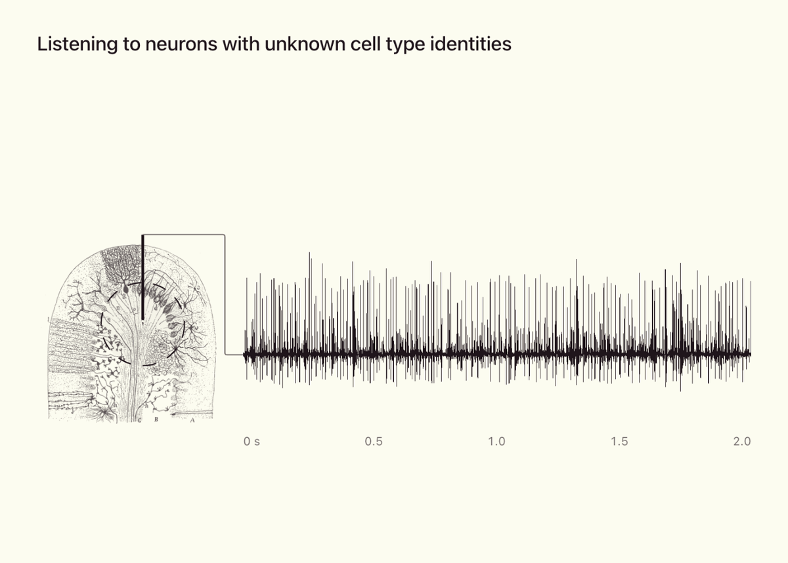
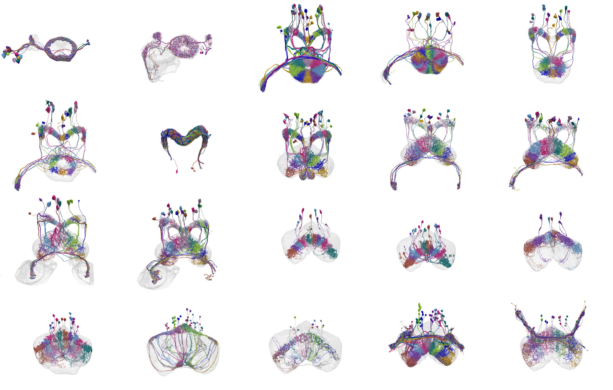
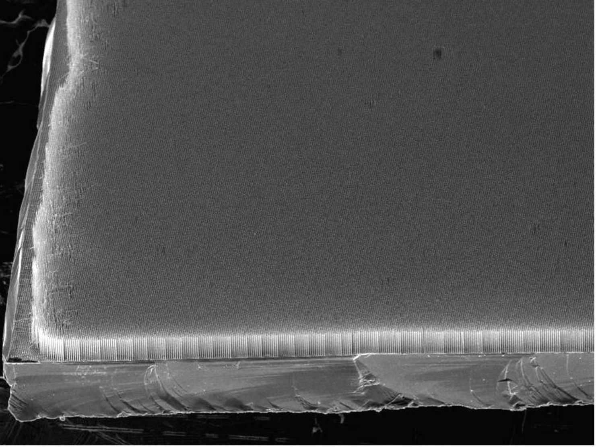

Research
Over 20 years of original research across applied physics, systems neuroscience, and, now, applying frontier AI to science.
AI-for-science

I use my background in neural networks, biology, and materials science to explore how AI is changing science.
At the Institute for Progress, I designed and run a competitive call for frontier AI-for-science proposals. It drew more than 300 submissions. We publish the strongest ideas to steer public policy and philanthropic investment. The first is the Deliverome Project, on breaking the delivery bottleneck in precision medicine. The second is Learning the Language of the Brain’s Cell Types, on how linking neural activity to cell identity will help build models of the brain and reveal new therapeutic targets. More are forthcoming.
Frontier AI in my own work
- Teaching with Claude Code. I built a lab for an AI-for-science course centered on CRISPR variants (AI-for-science).
- Research and data sharing with Claude Code. I build data analysis (EASI-FISH-Analysis) and data sharing (GluPuff) pipelines with Claude Code.
- Early ML touch points. I built automated experimental systems, custom microscopes, and closed-loop behavior rigs; modeled recurrent neural networks; and analyzed data in Python, R, C++, and MATLAB using ML methods.
My articles on AI for science are on the Artifacts page.
Neuroscience

As an assistant professor at UC Santa Cruz and a postdoc and research scientist at the HHMI Janelia Research Campus, I studied how computations emerge from biological neural networks, using the fruit fly as a model. I focused on navigation and how animals (like us!) form our sense of direction.
A compass in the fly brain
Much of my work asked how a ring-shaped network in the fly's central complex tracks heading. The New York Times wrote about this circuit in 2015. I showed how a fly heading circuit integrates angular velocity and related the ultrastructure of this biological ring attractor to its function. My recent preprints look at how octopamine instructs head direction plasticity and how excitatory and inhibitory signaling diverge in a head direction circuit.
Wiring diagrams
I was a joint first author on a connectome of the Drosophila central complex, which identified network motifs suited to flexible navigation and context-dependent action selection. The New York Times highlighted it on the front page of its Science section, and it has been cited more than 300 times. I also co-wrote a primer on the insect central complex.
Collaborations
I have also contributed to work on local search in flies, predicting neuronal firing from calcium imaging, and light-induced epilepsy.
In the press
- Why Scientists Have Spent Years Mapping This Creature’s Brain, New York Times, 2021
- The Circle That Gives Fruit Flies Direction, New York Times, 2015
All neuroscience publications (11)
-
Predicting neuronal firing from calcium imaging using a control theoretic approach PLOS Computational Biology, 2025 paper
-
Optogenetics in Drosophila melanogaster New Techniques in Systems Neuroscience (Springer), 2015 paper
* Contributed equally.
Energy and semiconductors

Driven by a desire to combat climate change, I have periodically threaded clean energy efforts throughout my career. For my PhD at Caltech, I designed and built solar cells, then helped found Caelux to commercialize the technology. While living in Virginia, I co-founded Zero Carbon Virginia, a group of scientists, engineers, economists, public health experts, and concerned citizens seeking pragmatic paths to a zero-carbon energy future. On the Senate Appropriations Subcommittee on Energy and Water Development, I conducted oversight of the Department of Energy's basic and applied science programs and helped develop its plan for bringing AI into the national labs.
I earned a BS in applied physics and electrical engineering at Yale in 2008 and a PhD in applied physics at Caltech in 2013, where I was a National Science Foundation Graduate Research Fellow.
For my PhD, I designed semiconductor device architectures using analytical modeling and electromagnetic and electronic simulations, then fabricated and characterized them. I also built a custom crystal-growth apparatus and characterized the crystals with electron and optical microscopy. After graduating, I helped found Caelux, a startup that sought to scale up and commercialize a novel solar cell technology I developed during my PhD, and worked there as a research engineer.
Nanowire electronics and sensing
My earliest papers cover how to make contacts to nanowires, measure their electronic properties, and use them as sensors, including label-free immunodetection with CMOS-compatible nanowires.
Silicon wire array solar cells
Much of my PhD work focused on solar cells made from arrays of silicon microwires, from measurements of single-nanowire cells to enhanced absorption and carrier collection in wire arrays and high-performance microwire photovoltaics, on which I was a joint first author.
Multijunction wire array cells
I also worked on tandem designs, including GaP/Si wire array cells and optoelectronic analysis of multijunction wire arrays. I also developed flexible, transparent contacts for nanostructures and thin films.
Solar fuels
The same wire arrays can drive chemistry, as in work on the energy-conversion properties of silicon wire-array photocathodes and photoelectrochemical hydrogen evolution.
Patents
- Heterojunction wire array solar cells (US 9,263,612 B2)
- Three-dimensional patterning methods and related devices (US 9,530,912 B2)
All semiconductor publications (23)
-
Cu-Catalyzed Vapor–Liquid–Solid Growth of SiGe Microwire Arrays with Chlorosilane and Chlorogermane Precursors Crystal Growth & Design, 2015 paper
-
Flexible, Transparent Contacts for Inorganic Nanostructures and Thin Films Advanced Materials, 2013 paper
-
Optoelectronic analysis of multijunction wire array solar cells Journal of Applied Physics, 2013 paper
-
Photoelectrochemical behavior of planar and microwire-array Si|GaP electrodes Advanced Energy Materials, 2012 paper
-
Wafer-Scale Growth of Silicon Microwire Arrays for Photovoltaics and Solar Fuel Generation IEEE Journal of Photovoltaics, 2012 paper
-
Optoelectronic design of multijunction wire-array solar cells IEEE Photovoltaic Specialists Conference, 2011 paper
-
Photoelectrochemical Hydrogen Evolution Using Si Microwire Arrays Journal of the American Chemical Society, 2011 paper
-
Conformal GaP layers on Si wire arrays for solar energy applications Applied Physics Letters, 2010 paper
-
Enhanced absorption and carrier collection in Si wire arrays for photovoltaic applications Nature Materials, 2010 paper
-
10 μm minority-carrier diffusion lengths in Si wires synthesized by Cu-catalyzed vapor-liquid-solid growth Applied Physics Letters, 2009 paper
-
Predicted efficiency of Si wire array solar cells IEEE Photovoltaic Specialists Conference, 2009 paper
-
Methods for fabricating Ohmic contacts to nanowires and nanotubes Journal of Vacuum Science & Technology B, 2006 paper
* Contributed equally.